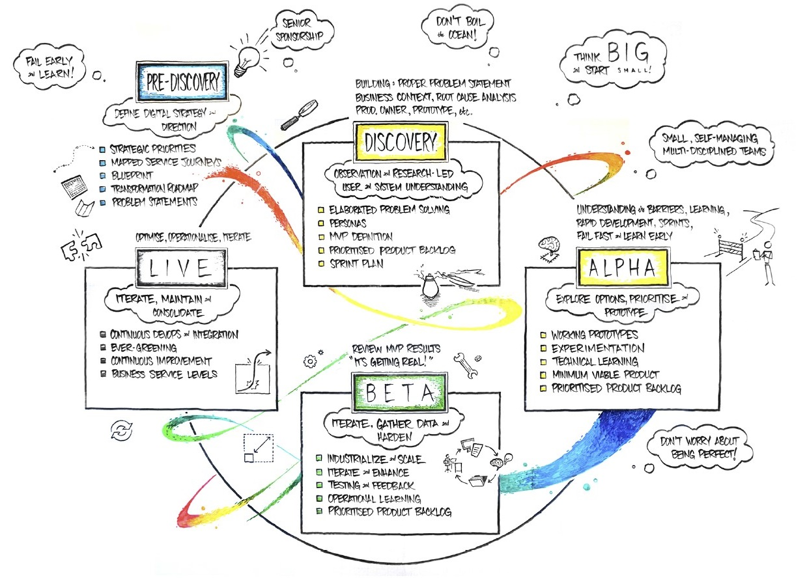

The Digital Transformation Centre combines the power of Design Thinking, Agile application development, Lean and DevOps principles to help clients rapidly solve business challenges through a consistent product and service development approach influenced by industry best practice in lean, agile, UX and service design. The goal of Centre's Product Development Approach is to set a collaborative engagement framework that allows DXC and client teams to start delivering a solution within hours or days of defining a problem. It contrasts with traditional waterfall methods which usually require weeks and months before delivery commences.
The framework that can be applied to almost any business scenario. Some examples already delivered out of the Digital Transformation Centre (see also our Case Studies):
The implementation of a new business process and supporting applications
Backend engineering of IT platforms and associated automation
Transformation of Service Management operations to reduce unplanned work, speed up incident resolution and improve customer satisfaction
The framework is described in five 'phases' which are continuously iterated. Click on the phases on the diagram below to understand the activities, outputs, tools and techniques used within each phase:

Defining a Digital strategy, creating the blueprint and developing Transformation Roadmaps in Pre-Discovery
Elaborating the Problem Statements and creating the prioritised Product Backlog through a Discovery
A rapid Alpha development phase delivering, via technical learning, Minimum Viable Products (MVPs) to prove hypothesis and assumptions
Enhancing, scaling and hardening the MVP through a Beta phase including transitioning to the required operating and support model
Iteration of the product through Continuous Integration and Operations in Live
The Product Development Approach sets the framework for all activities within the Centre, it is not prescriptive about the tools and methodologies used within each phase.
Benefits
DXC believe that the benefits of this agile approach over traditional 'waterfall' or 'monolithic predefined' programmes of work are:
Close alignment with the Business through close collaboration and Product Owners prioritising deliverables against business priorities
Lower risk, by addressing blockers and assumptions early through the delivery of technical prototypes and continuous learning
Earlier return on investment by delivering capability into production rapidly
Terminology and Actors
As our Product Development Approach is based on the principles of Design Thinking, Agile, Lean and DevOps we of course use a lot of Agile terms.
We refer to our delivery teams as Squads. We describe a Squad as a team of maximum 7 (Scrum Master and up to 6 multi-skilled engineers/developers) plus the Product Owner (who should be from the client). The Squads perform disciplined Scrum ceremonies (eg. daily scrum meeting), use Kanban boards and other collaboration tools and platforms. Work is performed in iterations - Sprints and Increments. The term Cadence refers to the duration of these iterations - a Sprint is usually two weeks while a Program Increment would typically consist of four Sprints. In other words, the Cadence describes frequency and speed of the feedback loops of the approach.
Applying Design Thinking, focusing on Business Outcomes means that required features or capabilities are described as User Stories from the perspective of a specific Persona. It is then the Squad's job to take care of how to develop the code that will satisfy the requirements of the user story. The Product Backlog contains all the User Stories and artifacts that need to be addressed. Entries in the Product Backlog are ordered and prioritized (a responsibility of the Product Owner).
We develop Minimum Viable Products rather than a prototype or proof of concept - and it is important to understand the difference.
Please also see our Glossary for a more comprehensive definition of the various terms we use as well as our Actors section to get a more comprehensive overview of the various stakeholders and roles engaged through the approach.
Pathways
The Product Development Approach is a set of principles that are adhered to in the Digital Transformation Centre, the approach can be used for the development of different products, delivering roadmaps or multiple initiatives/themes. As the we evolve the approach, different Pathways will exist where we are delivering similar business outcomes.
To understand some of the Pathways we are already developing: Pathways
Collateral
Other collateral which helps to explain the Product Development Approach includes:
An idea for Continuous Transformation Video
Information Exchange Session Video